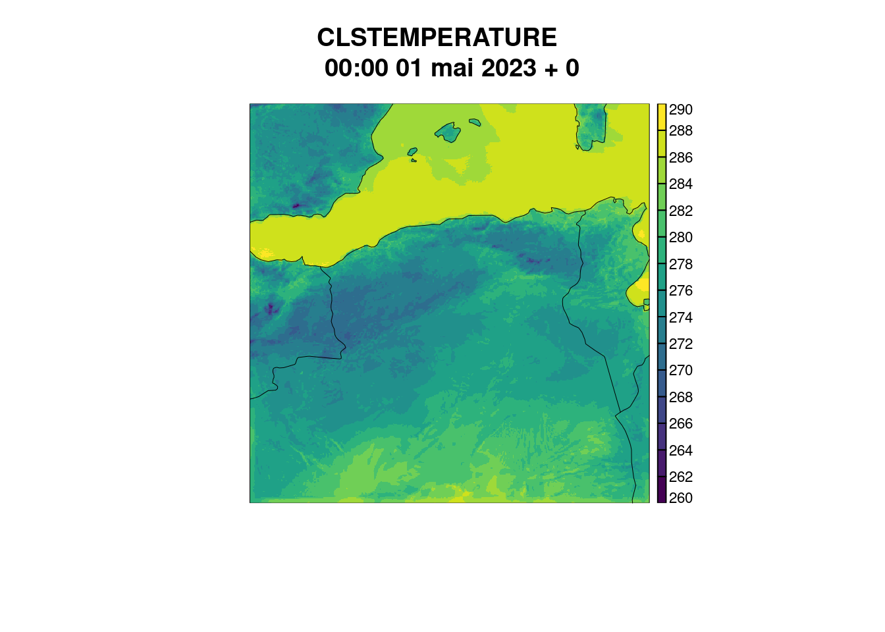

HARP est un outil pour lire, traiter et comparer les données de télédétection par satellite, les données de modèle, les données in situ et les données de télédétection au sol. Cet outil est composé de :
Harp en considération plusieurs formats de données : (NetCDF - HDF5 - FA - LFI - GRIB) et peut étre manipulé en utilisant R , Python - Matlab - IDL ou des lignes de commandes UNIX¨.
Ce document présente un guide pour débutant harp afin de l’installer et l’utiliser sur Rstudio.
le package Harp n’est pas disponible sur le repertoire CRAN du Langage R, Pour cela une installation directe du github sera menée.avant d’entamer l’installation nous devons dabord installer les prérequis :
#install.packages("devtools")
#install.packages("tydiverse")
#install.packages("tinytex")Maintenant procédons a l’installation du package harp Basic (ne prend pas en considération les formats LFI et FA ) ^ :
# Installation de HARP
#library(devtools)
#install_github("harphub/harp", force = TRUE)Si l’installation du package a été effectué avec succés un message de ce genre sera affiché sur la console de Rstudio :
Afin d’utiliser un package sur R , nous devons tous dabord le charger sur notre environnement de travail. la fonction library() de R permets de faire cela:
# library(tinytex)
# library(harp)Ce chapitre est en cours d’exploration.
Voici un petit exemple pour la manipulation d’un fichier FA
library(Rfa)
library(harp)
# Lire un champ a partir d'un ICMSH et l'attribuer a un variable.
t2m=Rfa::FAdec("data/file.fa","CLSTEMPERATURE")
plot_field(t2m)
L’utilitaire harp offre une varieté de fonctions qui permettent de lire les sorties des modéles ( NetcDF,GRIB ,FA, LFI) ,ce guide présente un simple exemlple de la lecture des format ” LFI ” et ” FA ” a l’aide de la fonction read_forecast()
library(Rfa)
library(harp)
#_INITITAION DES ARGUMENTS___
# POUR VOIR TOUT LES ARGUMENTS ET LEURS VALEURS PAR DÉFAUT ATTRIBUÉES . VEUILLEZ VOIR LE VOLET "Help"
start=20230501 # ! sous format {YYYY}{MM}{DD}{HH} : {HH} :peut etre omis
end = 20230501
leadtime= seq(0,0,1) ## lead time = nombre d'échéeance Ex AROME-OPER -> leatime=seq(0,48,6) or 48 echeances avec un pas de 3h
template="file.fa" #! LDT2 = represente le leadtime dans Harp; 2 = en 2 chiffres;
path="data"
##_affichages des parametres prédéfinis dans Harp__####
show_harp_parameters()## # A tibble: 21 × 2
## harp_parameter_name description
## <chr> <chr>
## 1 AccPcp12h Accumulated precipitation over e.g. 12 hours
## 2 CChigh High level cloud cover
## 3 CClow Low level cloud cover
## 4 CCmed Medium level cloud cover
## 5 CCtot Total cloud cover
## 6 Cbase Height of cloud base
## 7 D10m 10m wind direction
## 8 G10m 10m wind gust - period depends on input data
## 9 Gmax 10m maximum wind gust - period depends on input data
## 10 Pcp Precipitation direct from model - usually accumulated fr…
## 11 Pmsl Pressure at mean sea level
## 12 Ps Pressure at surface
## 13 Q2m 2m specific humidity
## 14 RH2m 2m relative humidity
## 15 S10m 10m wind speed
## 16 Smax Maximum 10m wind speed - period depends on input data
## 17 T2m 2m temperature
## 18 Td2m 2m dewpoint temperature
## 19 Tmax Maximum 2m temperature
## 20 Tmin Minimum 2m temperature
## 21 vis Horizontal visibility
##
## For upper air parameters, Z, T, RH, D, S, Q, and Td are available. Follow the
## letter with a number to denote pressure level, e.g. T850, S925, Z300 etc.#_ CHOISIR UN PARAMETRE DE LA LISTE OU DÉFINIR UN NOUVEAU A L'AIDE DE LA FONCTION : as_harp_parameter()
parametre="T2m"#__LECTURE DES FULPOSS___
forecast=read_forecast(start_date = start,
end_date = end,
fcst_model = "AROME", # Peut etre omis
parameter = parametre,
lead_time = leadtime,
by="1d", # Forecast run, ( Réseaux), by="1d" Pour dire 1 réseau chaque minuit,
file_path = path,
file_template = template,
file_format = "fa",
stop_on_fail = T,
return_data = T , # a utiliser avec précautions , consomme beaucoup de mémorire RAM.
)## Reading data/file.faforecast %>% print(n=Inf)## • AROME
## # A tibble: 1 × 9
## fcdate lead_time parameter validdate level_type level
## <dttm> <dbl> <chr> <dttm> <chr> <dbl>
## 1 2023-05-01 00:00:00 0 T2m 2023-05-01 00:00:00 height 2
## # ℹ 3 more variables: units <chr>, fcst_cycle <chr>, AROME_det <geolist>Aprés avoir lu et importer les données sur l’environnement de R, des traitements usuels peuvent etres appliqués et ces données peuvent etre traité a l’aide des fonction R de Base ou a l’aide du package ( dplyr )
To be continued
Under Construction ....
-------------------------------------------
Les critiques c'est pas la peine
Je ne suis q'un simple Jeune Algérien Ambitieux..
Li Y3awen Mraaaahba BIH
--------------------------------------
SAHITOUUUUUUUUUUUUUUUUUUUUUUUUUUUUUUUUUUU
Comment Travailler avec les formats LFI et FA
Bien que les sorties des modéles opérationels utilisés au sein de Météo-Algérie soient du format “LFI” et “FA” ou plus couramment nommée par le services de la PNT “Fullpos” et “ICMSH”, le package de base harp ne prend ces deux format en compte, et pour de raisons de confidentialité le code source du package “Rfa” pour la manipulation de ces 2 formats n’est pas publiquement paratgé jusqu’a présent sur aucun service web. Pour se procurer le package Rfa , vous devriez contacter Monsieur Alex Deckmyn < alex.deckmyn@meteo.be > du l’institut Royal de Météorologie (IRM)